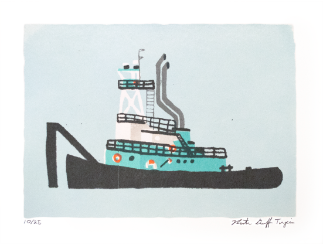
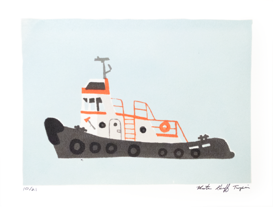
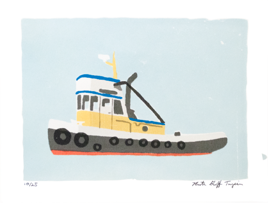
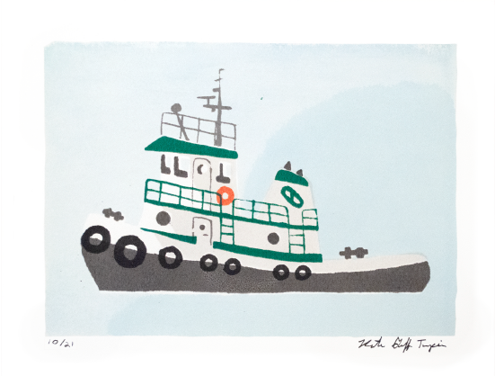

Tugboat Print Series
2018
This print series is inspired by the tugboats I've seen working in the Seattle Ship Canal while I worked at an office in the fremont neighborhood. They were made to decorate the nursery of my son, and as a way for me to share my appreciation for the vibrant local maritime industry.
   